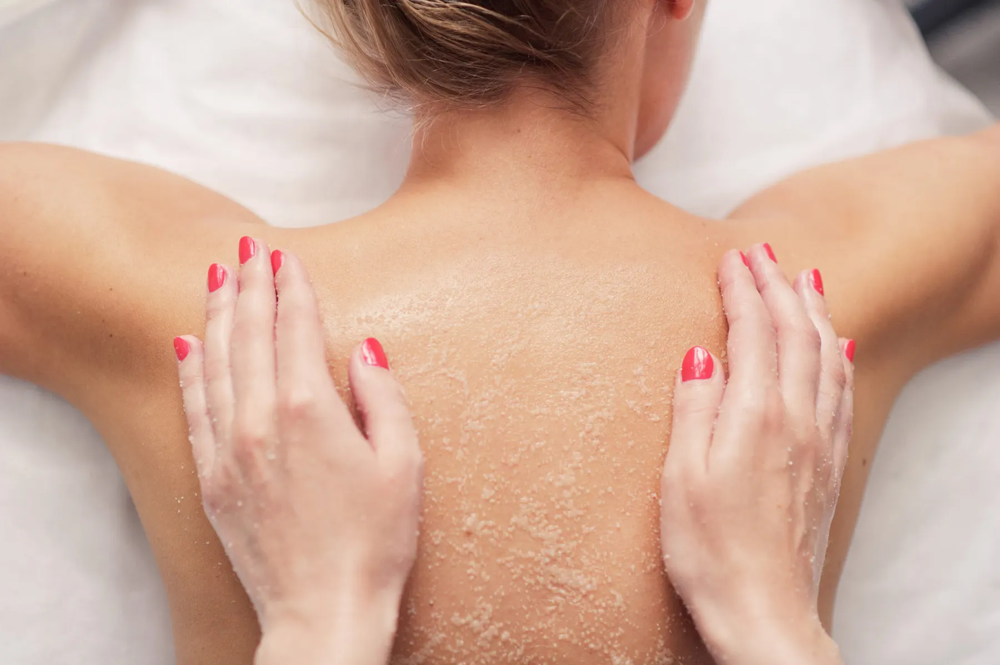
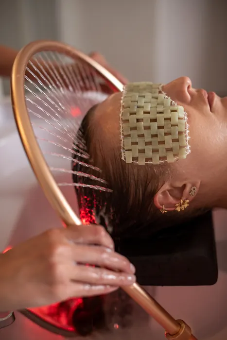
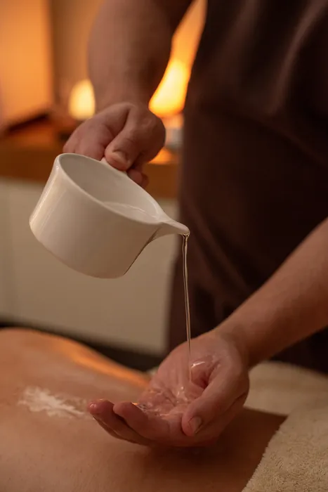
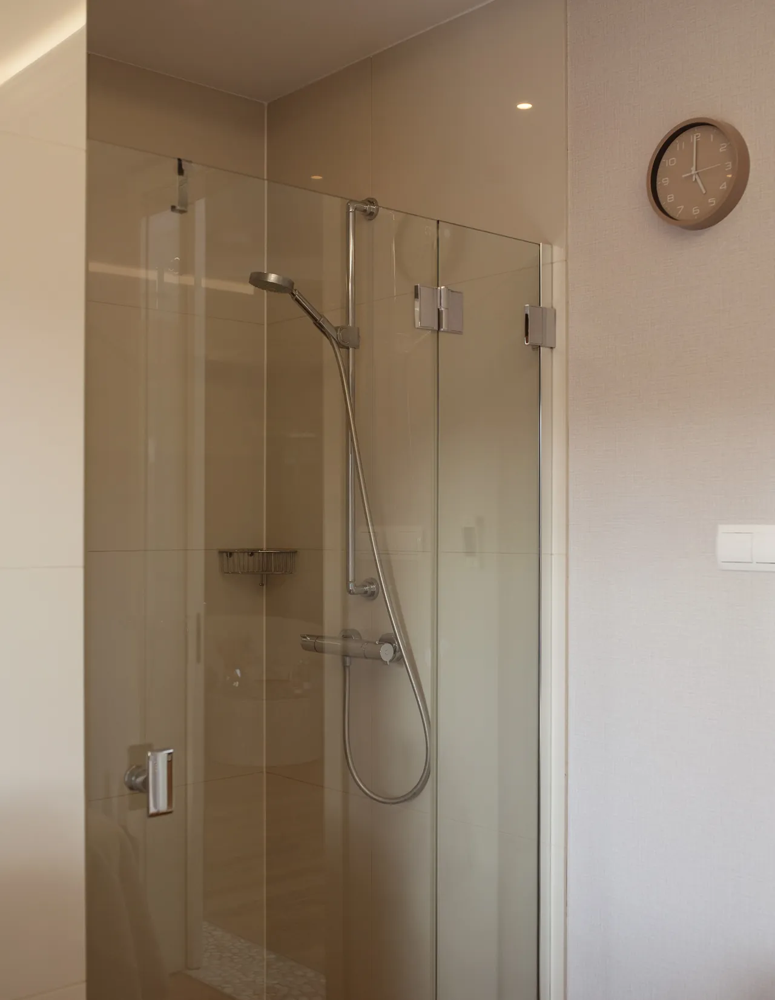
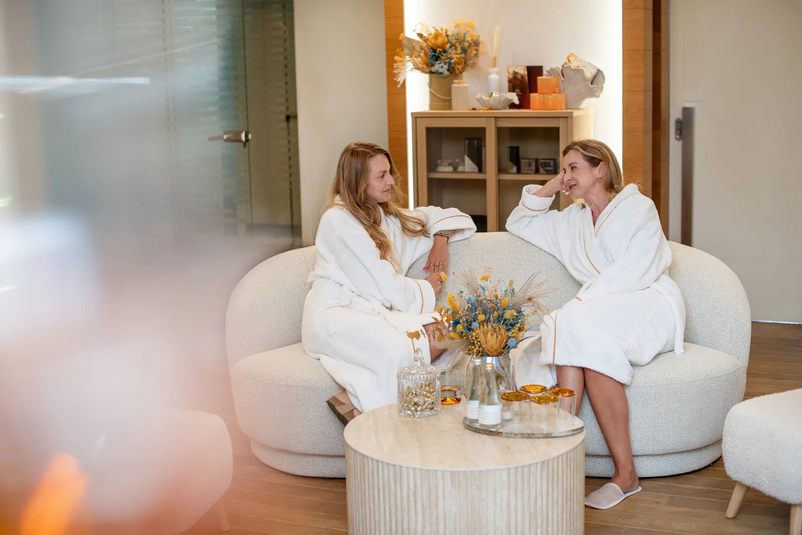
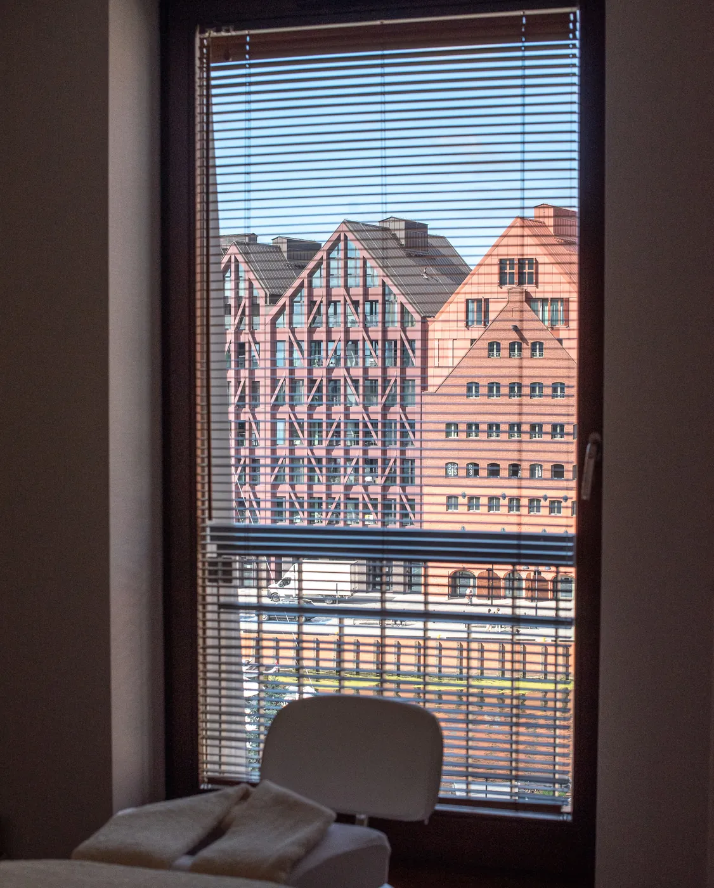
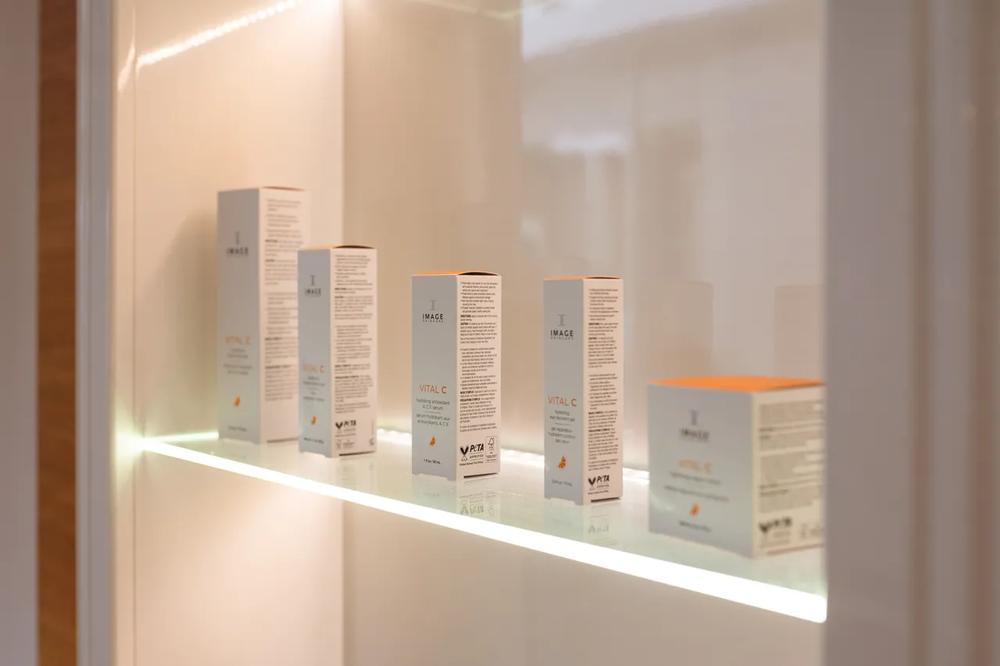

Przytulne SPA nad Motławą · Hotel Gdańsk Boutique, 5. piętro
Chwila dla siebie, która zostaje na dłużej
Miejsce stworzone dla tych, którzy chcą wyglądać lepiej, czuć się lepiej i zwolnić choć na chwilę.
Longevity, czyli dbać o siebie na dłużej
„Nowoczesna pielęgnacja, regeneracja i wellbeing w estetyce współczesnego longevity.”
Longevity nie jest u nas kolejną kategorią zabiegów, tylko sposobem pracy. Chodzi o to, żeby skóra i ciało były w dobrej kondycji nie tylko po jednej wizycie, ale przez kolejne lata. Łączymy relaks i terapie manualne z kosmetologią oraz nowoczesnymi technologiami.

- RegeneracjaOdpoczynek i zabiegi, które wspierają naturalną odnowę skóry i ciała.
- Świadoma pielęgnacjaZabiegi dobrane do skóry i pielęgnacja domowa, którą da się utrzymać.
- Dobre samopoczucieSpokój, oddech i chwila dla siebie liczą się tak samo jak efekt w lustrze.
Pierwszy raz słyszysz o longevity? Zacznij od bezpłatnej, 30-minutowej konsultacji.
Więcej o naszej filozofiiZabiegi
Od spokojnego masażu po zabiegi z użyciem nowoczesnych urządzeń. Ceny pochodzą z naszego profilu w Booksy, tam też wybierzesz termin.
 od 190 zł
od 190 złMasaże twarzy i ciała
Relaksacyjne i klasyczne, Kobido, refleksologia stóp i twarzy.

od 450 złRytuały i HeadSPA
Amber i Yuzu dla ciała, HeadSPA dla skóry głowy i włosów.
 od 80 zł
od 80 złKosmetyka twarzy
Glow & Go, ProXN, Diego dalla Palma, C-Bomb, peelingi i oczyszczanie.
 od 150 zł
od 150 złDodatki longevity
Uzupełnienie zabiegu na twarz lub ciało albo samodzielny, 30-minutowy seans longevity.
 od 120 zł
od 120 złZabiegi z użyciem urządzeń
ZaffiroLift, Geneo X, LaserMe, InPure i inne urządzenia.

od 200 złKosmetyka ciała
Rytuały Sculptorea, terapie Arosha, fala uderzeniowa STORZ.

Strefa saun na wyłączność
Jeśli korzystasz u nas z zabiegu, po wcześniejszej rezerwacji cała strefa saun jest tylko do Twojej dyspozycji. Połącz zabieg z saunami i zaplanuj u nas całe popołudnie albo wieczór.
- Trzy sauny: fińska, parowa i infrared
- Strefa odpoczynku z napojami
- Prysznice
- Ręczniki
- Szlafroki
- Klapki
- Bielizna jednorazowa
Jesteśmy otwarci także w soboty, niedziele i wybrane święta.

We dwoje i na specjalne okazje
Randka, urodziny, wieczór panieński albo wspólny zabieg z bliską osobą. Mamy gabinet duo do masażu dla dwojga i HeadSPA Duo, z którego dwie osoby korzystają jednocześnie.

Piąte piętro, widok na Motławę
Balola Gdańsk mieści się w Hotelu Gdańsk Boutique przy ul. Szafarnia 9. Z okien gabinetów widać Motławę i spichlerze, a w środku czeka ciepłe wnętrze w beżach i drewnie. Morze jest tuż obok, a w SPA łatwo zapomnieć o pośpiechu miasta.
Dla mieszkańców Trójmiasta
Stałe miejsce na regenerację: serie zabiegów, plan pielęgnacji i regularne wizyty u tych samych specjalistów.
Dla gości hotelu
SPA jest w tym samym budynku. Rytuał po podróży albo chwila relaksu przed wieczorem w mieście. Rezerwacja i obsługa także po angielsku.
Wnętrze, w którym się zwalnia
Recepcja, strefa wypoczynku, gabinety i pielęgnacja domowa. Przesuń, żeby zobaczyć więcej. Wszystkie wnętrza





Marki, z którymi pracujemy
Preparaty do pielęgnacji dobraliśmy mając na uwadze przede wszystkim ich potwierdzoną, wyjątkową skuteczność zapewnioną poprzez innowacyjne formuły w nich zastosowane. Kosmeceutyki dostępne w salonie należą do ścisłej światowej czołówki środków kosmetologicznych.
ProXN
Polska marka kosmetyków profesjonalnych, stworzona z myślą o skutecznej i bezpiecznej pielęgnacji skóry.
Intraceuticals
Australijska marka kosmetologiczna, która zasłynęła na całym świecie metodą infuzji tlenowej.
IMAGE Skincare
Amerykańska marka medyczna, powstała w oparciu o dokonania dermatologii, medycyny estetycznej i kosmetologii.
Diego dalla Palma
Włoska marka kosmetyków premium, łącząca doświadczenie kosmetologów z pasją do pielęgnacji.
RVB LAB
Włoska marka kosmetyków profesjonalnych do zaawansowanej, skutecznej i bezpiecznej pielęgnacji skóry.
Arosha
Preparaty stworzone wyłącznie do pracy z ciałem, z flagowymi bandażami nasączonymi aktywnymi składnikami.
Lycon
Australijski lider wśród wosków do depilacji, na bazie aloesu, rumianku, lawendy, żywicy i wosku pszczelego.
- Więcej o markach
Opinie naszych gości
Oceny z dwóch platform i kilka dłuższych opinii o konkretnych zabiegach.
Oceny sprawdzone 9.11.2026. Opinie z Booksy cytujemy dosłownie (bez emotikonów).
Do uzupełnienia przed publikacją: 2-3 dłuższe opinie z Google (Mapy Google pokazują treść opinii tylko po zalogowaniu) i aktualna liczba opinii w Google.
„Jestem bardzo zadowolona z wizyty! Zabieg przebiegł świetnie, atmosfera była bardzo miła i komfortowa. Konsultacja była szczegółowa, wszystko zostało wyjaśnione. Widać pełen profesjonalizm i troskę o klienta. Na pewno wrócę ponownie! Podziękowanie dla Pani Katarzyny Kreńskiej”
„Zabieg bardzo relaksujący i odżywczy. Pan Hubert dokładnie omawiał każdy etap zabiegu, dzięki czemu czułam się zaopiekowana i w pełni komfortowo. Profesjonalne podejście, miła atmosfera i chwila prawdziwego relaksu. Zdecydowanie polecam!”
„Świetnie wykonany zabieg, Pani Katarzyna sprawiła, że atmosfera podczas zabiegu była przyjemna i czułem się zaopiekowany choć trochę mnie stresował zabieg laserowy. Polecam serdecznie”
„Bardzo przyjemny masaż, piękne glow na twarzy, super atmosfera, profesjonalnie i przytulnie. Polecam serdecznie”
Nowoczesne rozwiązania dla skóry, ciała i dobrostanu, tworzone z myślą o regeneracji, równowadze i efektach, które zostają na dłużej.
Beauty. Longevity. Deep reset.

12 lat Baloli. Zaczęło się w Sopocie
Balola powstała w Sopocie z myślą o kobietach aktywnych, wymagających i świadomych. Gdańsk jest kolejnym rozdziałem tej historii, z własnym charakterem i ofertą, ale z tą samą dbałością o skuteczność i o to, jak się czujesz.
Poznaj nasRezerwacja i dojazd
Balola GdańskHotel Gdańsk Boutique, 5. piętro
ul. Szafarnia 9, 80-755 Gdańsk
- Poniedziałek10:00-20:00
- Wtoreknieczynne
- Środa - niedziela10:00-20:00
Hotel Gdańsk Boutique, 5. piętro
ul. Szafarnia 9, 80-755 Gdańsk
Mapa Google jest wyłączona w ustawieniach cookies.
Balola SPA mieści się na 5. piętrze Hotelu Gdańsk Boutique, w części Yachting, przy Marinie Gdańsk. Wejście prowadzi przez główną recepcję hotelu, znajdującą się w zabytkowej części Spichlerz.